하늘 높이 던진 공도, 나무에서 떨어지는 사과도 결국 땅으로 떨어져요. 모든 물체를 지구 쪽으로 끌어당기는 힘, 중력에 대해 알아봐요.
🏀🍎🌏
↩ 이전 내용 확인하기
지난 시간에 배운 합력과 힘의 평형, 기억나나요?
1
한 물체에 오른쪽으로 7 N, 왼쪽으로 3 N의 힘이 작용할 때 합력은?
정답은 오른쪽 4 N! 7 N − 3 N = 4 N, 방향은 큰 힘의 방향이에요.
2
한 물체에 작용하는 힘들의 합력이 0인 상태를 무엇이라고 할까?
📌 힘의 평형이에요. 오늘은 우리 주변의 여러 가지 힘 가운데 첫 번째, 중력을 알아봐요.
🎯 이 단원을 배우면
학습 목표
교과서 160~163쪽
1
중력의 크기와 방향을 설명할 수 있다.
2
질량과 무게를 구별할 수 있다.
💭 생각 깨우기
위로 던진 공은 어디로 갈까?
교과서 160쪽
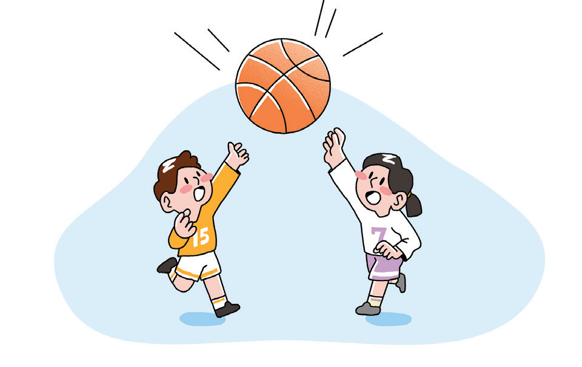
친구에게 농구공을 위로 높이 던졌어요. 공은 계속 하늘로 올라가지 않고 다시 아래로 떨어져요. 공이 다시 떨어지는 까닭은 무엇일까?
지구가 공을 지구 쪽으로 끌어당기기 때문이에요. 공은 위로 올라가는 동안에도 계속 이 힘을 받아서 점점 느려지다가 결국 아래로 떨어져요. 이 힘을 중력이라고 해요.
📘 교과서 개념
중력
교과서 160쪽
중력은 지구가 물체를 끌어당기는 힘이다. 중력은 지구 위의 모든 물체에 작용하며, 중력의 방향은 지구 중심 방향이다.
나무에서 사과가 떨어지는 것, 위로 던진 공이 다시 떨어지는 것, 비나 눈이 땅으로 내리는 것은 모두 물체에 중력이 작용하기 때문이다. 지구는 둥글기 때문에 우리가 지구의 어느 곳에 있든 중력은 항상 지구 중심을 향한다. 그래서 지구 반대편에 사는 사람들도 땅 위에 서 있을 수 있다.
📎 우리가 서 있는 곳에서 중력의 방향은 땅에 수직인 아래 방향이에요. 이 방향을 연직 방향이라고도 해요.
🔬 해 보기
중력의 방향 나타내기
교과서 161쪽
그림은 지구의 여러 곳에 있는 사람들이다. 사과에 작용하는 중력의 방향처럼, (가)~(다)의 사람에게 작용하는 중력의 방향을 화살표로 나타내 보자.
👆 빨간 점(작용점)을 누른 채 중력이 향할 방향으로 끌어 보세요. 아래 버튼으로 화살표를 조금씩 돌릴 수도 있어요.
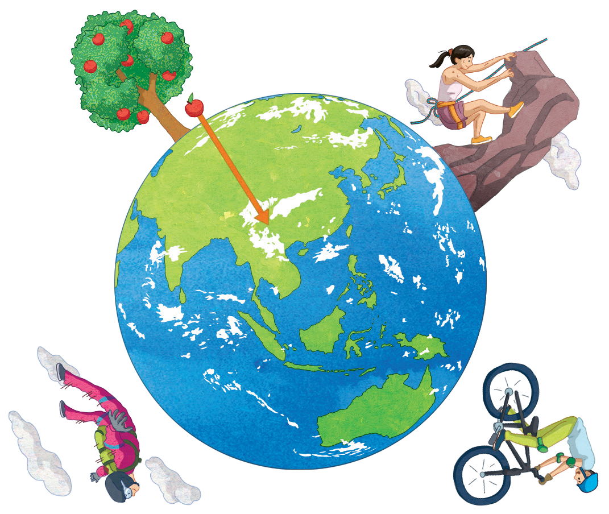
세 사람 모두 화살표를 그린 뒤 「정답 확인」을 눌러요.
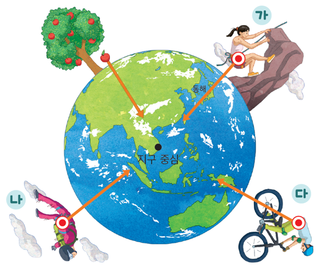
(가)~(다)의 사람에게 작용하는 중력은 모두 지구 중심 방향으로 작용한다. 지구 위 어디에 있든 중력은 항상 지구 중심을 향한다.
📝 활동 후 설명해 보기
1
(가)~(다)의 사람에게 작용하는 중력의 방향은 어떤 공통점이 있는지 설명해 보자.
(가)~(다)의 사람에게 작용하는 중력의 방향은 모두 지구 중심 방향이다.
2
지구 반대편에 사는 사람들이 우주로 떨어지지 않고 땅 위에서 생활할 수 있는 까닭을 설명해 보자.
지구 위 어느 곳에서나 중력이 지구 중심 방향으로 작용하여 사람을 지구 쪽으로 끌어당기기 때문이다.
🔎 생활 속 과학
우리 주변에서 중력 찾기
교과서 162쪽
다음은 중력과 관련된 모습이다. 중력이 어떻게 작용하는지 먼저 생각해 본 뒤 설명을 열어 보자.
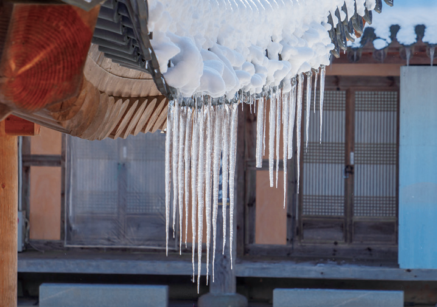
🧊 고드름
녹은 물이 중력을 받아 아래로 흘러내리다가 얼기 때문에 고드름은 아래쪽으로 길게 자란다.
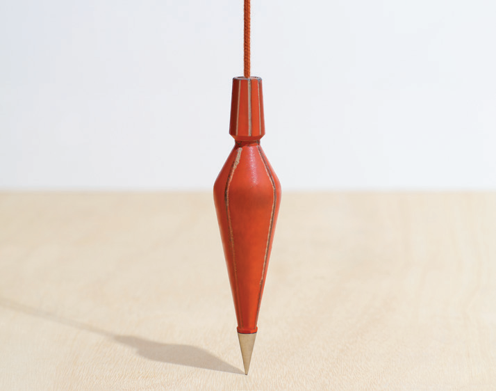
📐 다림추
추에 중력이 작용해 실이 항상 지구 중심 방향(연직 방향)을 가리킨다. 그래서 건물이나 기둥이 똑바로 서 있는지 확인할 때 쓴다.
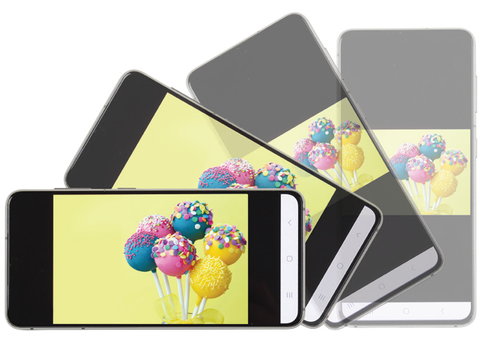
📱 스마트폰 화면 회전
스마트폰 속 센서가 중력의 방향을 감지하여 기기를 돌리면 화면이 알맞은 방향으로 바뀐다.
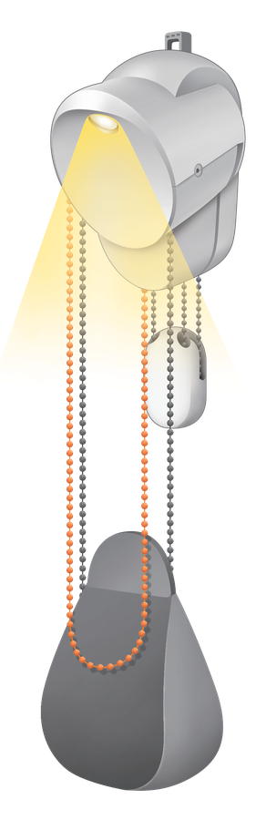
💡 추가 달린 조명
줄 끝의 추에 작용하는 중력이 줄을 아래로 팽팽하게 당겨 주어, 조명을 원하는 높이에 고정할 수 있다.
📘 교과서 개념
무게와 질량
교과서 162~163쪽
물체에 작용하는 중력의 크기를 무게라고 한다. 무게는 힘이므로 단위로 N(뉴턴)을 사용하며, 용수철저울이나 체중계로 측정한다. 한편 질량은 물체가 가진 고유한 양으로, 측정하는 장소가 바뀌어도 변하지 않는다.
⚖️ 무게
뜻
물체에 작용하는 중력의 크기
단위
N(뉴턴)
측정
용수철저울, 체중계
장소
장소에 따라 달라진다
🧱 질량
뜻
물체가 가진 고유한 양
단위
g(그램), kg(킬로그램)
측정
윗접시저울, 양팔저울
장소
장소가 바뀌어도 변하지 않는다
🌏 지구 vs 🌕 달
달이 물체를 끌어당기는 힘은 지구가 끌어당기는 힘의 약 1/6이다. 그래서 같은 물체라도 달에서는 무게가 지구에서의 약 1/6로 줄어든다. 하지만 질량은 그대로이다.
🌏 지구에서
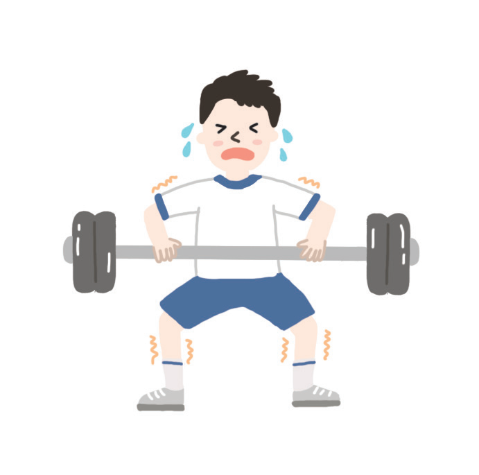
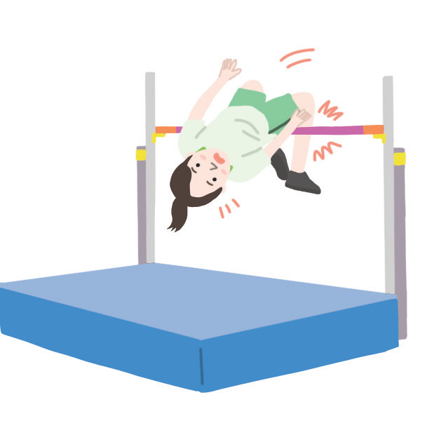
역기가 무겁고, 높이뛰기 막대를 넘기가 힘들다.
🌕 달에서
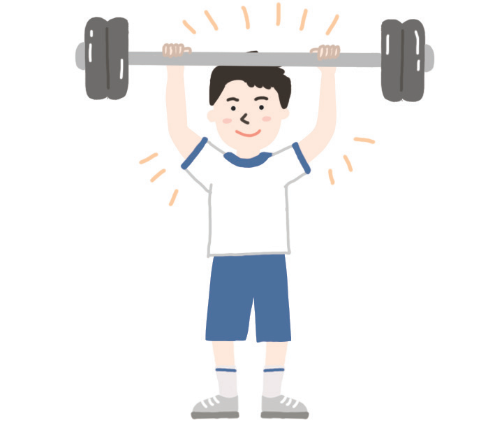
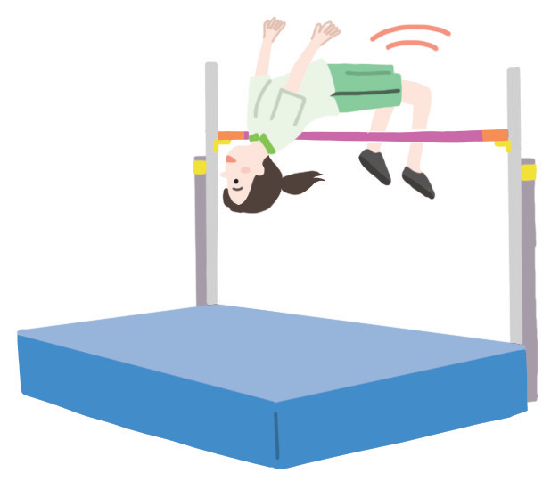
무게가 약 1/6이라 같은 역기도 가볍게 들고, 더 높이 뛸 수 있다.
질량 60 kg
질량 (어디서나 같음)60 kg
🌏 지구에서의 무게588 N
🌕 달에서의 무게 (약 1/6)98 N
질량 1 kg인 물체의 지구에서의 무게는 약 9.8 N이에요.
✅ 스스로 확인하기
배운 내용, 확인해 볼까요?
교과서 163쪽
1
문장을 완성해 보자. 지구가 물체를 끌어당기는 힘을 (이)라고 하며, 그 방향은 방향이다.
2
문장을 완성해 보자. 물체에 작용하는 중력의 크기를 (이)라 하고, 물체가 가진 고유한 양을 (이)라고 한다.
3
탐구 능력 | 지구에서 몸무게가 600 N인 우주 비행사가 달에 갔을 때, 무게와 질량은 각각 어떻게 될지 설명해 보자.
달의 중력은 지구의 약 1/6이므로 달에서의 무게는 600 N × 1/6 = 약 100 N으로 줄어든다. 하지만 질량은 물체의 고유한 양이므로 달에서도 변하지 않는다.
✏️ 개념 확인 문제
조금 더 풀어볼까요?
중력 · 무게와 질량 연습 문제
1
문장이 옳으면 O, 옳지 않으면 X를 선택해 보자. 지구 반대편에 있는 사람에게는 중력이 하늘 쪽으로 작용한다.
정답은 X! 지구 어디에서나 중력은 지구 중심 방향으로 작용해요.
2
문장이 옳으면 O, 옳지 않으면 X를 선택해 보자. 물체를 달로 가져가면 무게와 질량이 모두 1/6로 줄어든다.